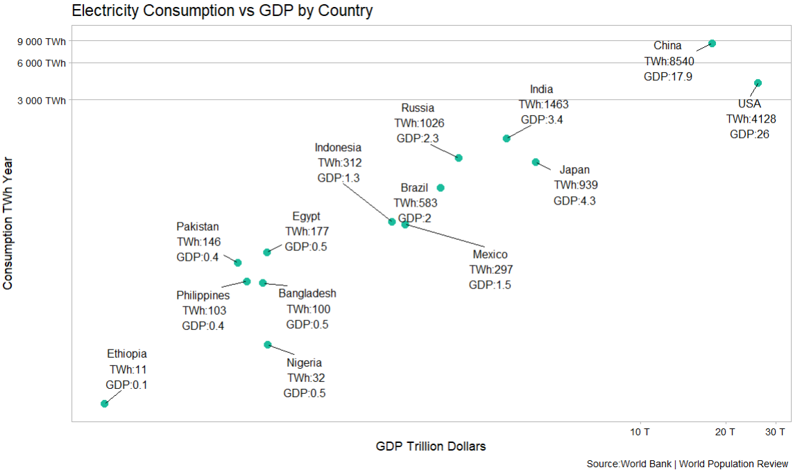
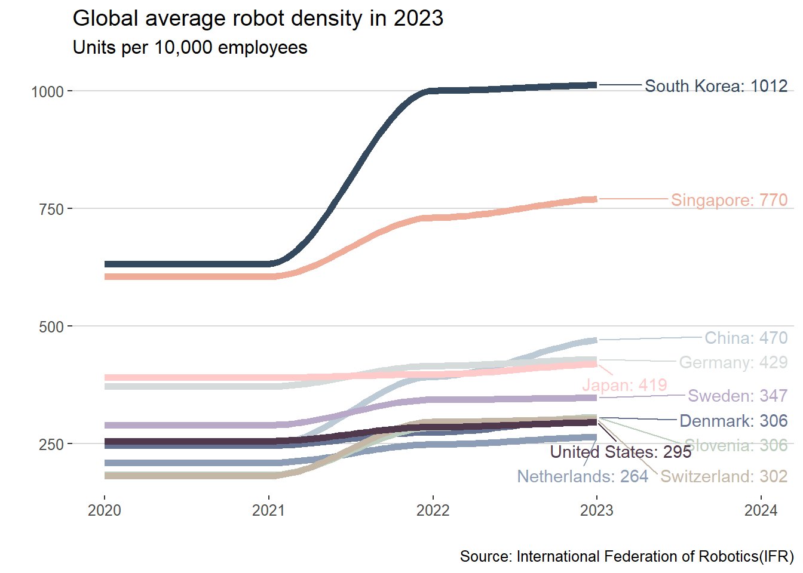
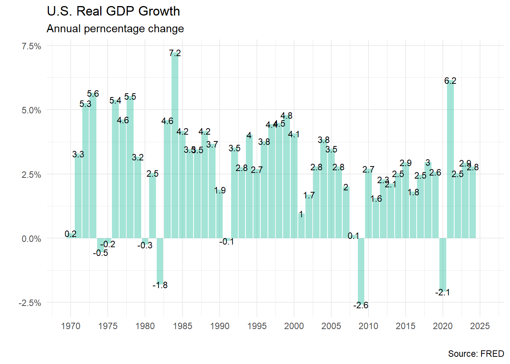

U.S. Advanced Manufacturing Action Plan
What are the guidelines that support this research project?
This summary is based on Helwig and Goldman (2024), and aims to improve my writing skills, business analysis, and process improvement in the U.S. market.
The texts may contain typos, imcomplete thoughts, and will be subject to ongoing revision and development. In addition to the main document, I also used reference documents, books, videos and articles to complement this work.
Advanced Manufacturing
Advanced manufacturing refers to the use of innovative technology, process and methods like intelligent robotics, additive manufacturing, digital twins, artificial intelligence, and lean principles to accelerate the design and production of physical goods. As a result, it is possible to achieve scale and possibilities that was previously impossible like cost reduction, and value-added products in shorter cycles.
Advanced manufacturing combines human capital with automation, robotics, AI(e.g, machine learning, large language models, computer vision, autonomous agents), IoT, and 3D printing to drive innovation and efficiency.
Impacts
Adcanced manufacturing drives economic stability, competitiveness, and growth, while maintaining fundamental skills, and mitigating market risks. Key impacts also include:
- Productivity: Streamline production processes by automation, reducing cycle times and labor cost.
- Costs: By optimizing processes and reducing waste.
- Supply Chain: IoT and data analytics can improve visibility and efficiency, reducing lead times and inventory costs.
- Jobs and skill requirements: New opportunities in fields like robotics programming, data analysis, and maintenance of advanced machinery.
- Quality: High precision, uniformity and consistency in production.
- Customization and Flexibility: 3D printing enable on-demand manufacturing of highly customizable products without retooling.
- Environmental Impact: By reducing material waste, energy consumption, and gas emissions.
The Past
Explore the past experiences estimulate our ability of mental time travel that essential for survival and adaptation, as it helps us predict outcomes, learn from mistakes, and build a sense of identity. Studying the past helps us identify how experiences shape the history and influence memory formation, and learning.
Process Innovation History
Shorten the distance: Enhancing the movement of goods to boost trade, industry, agriculture, and communication regionally and across the country. Erie Canal navigable waterway connecting the great lakes to the atlantic ocean completed in 1825 according to DPLA (1821) . The objective was to develop the city of New York, which was a point of communication with the world (e.g. port of trade hub), and opened up the MidWest for settlement and agricultural expansion, impacting the marginal product of labor according to Kaiman, Vandenbroucke, and Wolla (2024). The canal also had profound societal impacts shaping the nation’s economic development in the 19th century:
- It spurred westward migration, enhance commercial trade between regions.
- It contributed to the rise of new towns along its route.
- It facilitated cultural and political unity between the Northest and the expanding western territories.
- It spurred westward migration, enhance commercial trade between regions.

New processes: Making better products, faster and cheaper. The idea of the the Bessemer process was observed and described by a german adventurer Johan Mandelsio in 1669 during a trip to Japan, was patented by Henry Bessemer in 1855 in U.S., and popularized by visionary and entrepreneur Andrew Carnegie in 1870s, which allowed the creation of time machines like bridges, ships, trains, elevators, oil and water pipes, and vertical buldings. This process cuts the manufacturing time of single steel rail from two weeks to fifteen minutes.
Knowledge base, science, and data: Improvements of efficiency in the petroleum refining process using scientific methods, commercial partnerships, product standardization and uniformity. These factors enhanced Rockefeller’s natural leadership capabilities.
Redefine customer values: Ford, Packard, Home Depot, Nike, Dell Computer, Apple, Netflix and Tesla are just a few examples of how they created new damand by delivering a previously unknown experience to consumers. They built powerful, cohesive business systems that could deliver more of this value than their competitors. They raised customer expectations beyond what their competitors could reach.
Low levels of stress and anxiety: There is a potential association between consistently low levels of stress and anxiety (particularly when individuals or organizations remain in their confort zones) and a loss of economic competitiveness. While confort zone is beneficial for maintaining mental and physical health, can also lead to complacency. Moderate stressors encourage problem-solving, innovation, and adoption of new technologies. In the long term a lack of challenge and growth opportunities can lead to decreased motivation and creativity. Stress is a know driver of cognitive adaptation which is crucial for maintaining productivity in dynamic economic environments. This type of behavior and its consequences could be observed in the 1980s in the United States JustARandomChannel (2019) Peter Santenello (2024) FRONTLINE PBS (2024) and currently in 2024 in Germany DW News (2024).
Process improvement: Founded in 1906 by Willlian Riley, New Balance is an American footwear and apperal company headquartered in Boston Massachusetts, and one of the world leading manufacturers of high-quality athletic footwear. Known for its “Made in USA” products, the company prides itself on innovation, and performance using lean principles and tools to improve product flow through its plants to retailers and final customers.
The company began its lean transformation journey in 2003, with guidance from the Toyota Supplier Support Center, New Balance focused in problem-solving and process improvement to create a culture engaging the workforce while boosting performance.
Lean as management philosophy and set of practices aimed at creating more value for customers with less waste by continuously improving processes and eliminating non-value-adding activities. Deep understand of the value creation process, continuous learning through PDCA cycles, and willingness to challenge assumtions are vital for both workers and managers.
Problem-Solving Culture Employees identufy and tackle problems, with regular meetings to discuss and implement solutions. Instead of giving orders and say do that do this do this, they say, Okay, here’s the problem, here’s the gap that wr are trying to close, what are you going to do, how can I help? Start with a custmer, go backwards, and say, “Well, now hat are your problems?”.
Lean Education Associates receive training on lean priciples, including workshops on the basics of lean and waste detection. We have gone from the great manager solves problems to the coach helps people learn how to solve problems.
Standardized Work Processes are standardized to ensure efficiency and quality.
Continuous improvement Employees are encouraged to submit improvement ideas, with recognition and rewards for successful implementatios. Lean enterprises need to grow to provide apportunities for their employess and increase value creation. By cosntantly improving and becoming more efficient, theu can remain competitive and secure the jobs of their workforce Murman (2008)
The Present
Focusing on the present helps us undertand how we process information in real time, essential for responding to stimuli quickly and performing daily activities with mindfulness. One of the challenges of staying focused on the present is dealing with digital and physical distractions that are present in abundant quantities.
Challenges
Disruptive technologies: New ideas and old ones that could be explored by integration with emerging technology like computational capability, genAI, and atomic computer vision.
Demographic shifts around the world: People are getting older and more urban. Below is an example of the demographic transition in some countries where:
- P pencentage of the population in each group
- T total population in million in each group
- AS number of Adults to each Senior (65+ years)
- AY number of Adults to each Young (0-19 years)

- Economic activities in emerging markets: Many countries are emerging from poverty, creating opportunities and threats for example new demands, and lower labor costs.

- Climate change: New rules to take care of the environment, improving the capacity to adapt and interact with the environment by creating new products and services.

Erosion fo U.S. industrial capacity: Over the past few decades, the U.S. has experienced a significant decline in its industrial capacity. In 1980, the U.S. manufactured over 40 percent of global high-technology goods, facing 18 percent today. This decline poses a threat to both economic competitiveness and national security.
PRC’s Dominance: China has emerged as a potential competitor, cultivation substantial high-tech industrial production capacity and accounting for nearly 30 percent of global manufacturing output. China has strategically prioritized advanced manufacturing as a cornestone of its national rejuvenation strategy.
Skills Gap and Workforce Shortages: Outsourcing production has led to a skills gap in the U.S. workforce. This is compounded by a persistent labor shortage in the manufacturing sector, with a projected shortfall of 2.1 million unfilled jobs by 2030. This shortage hinders the adoption and implementation of advanced manufacturing technologies.
Small and Medium Manufacturing Adoption Barriers: Small and medium-sized manufacturers contribute the majority of the U.S. manufacturing ecosystem and they face significant obstacles in adopting advanced manufacturing technologies. These include a lacka of access to capital, expertise, and resources for system upgrades and integration.
Underinvestment in R&D: The U.S. lag as behind other advanced economies in terms of manufacturing-related R&D spending as a percentage of GDP. This underinvestment hampers innovation and the development of cutting-edge manufacturing processes.
Need the key actors working together: Industry, universities and governments
Opportunities
- Reconceptualize the workforce: The changing nature of manufacturing requires a new approach to workforce development, with a focus on training “technologists” skilled in both engineering and operation of advanced machinery.
- Leverage existing programs: The United States can build upon succesful programs like the manufacturing USA program and the Manufacturing Externsion Partnetship(MEP) to accelerate workforce development initiatives.
- Focus on cyber skills: The increasing integration of digital technologies in manufacturing requires a workforce with strong cyber skills.
- Develop a national talent marketplace: A centralized platform connecting job seekers with advanced manufacturing opportunities can help to adress workforce shortages.
- Leveraging U.S. Strenths in AI and Software: The U.S. enjoys a significant lead in generative AI, a technology with the potential to transform various facets of advanced manufacturing (e.g.GenAI can creates copilots to helps workers interpret complex factory data and enhance AI-driven design tools that can create product designs from natural language descriptions)
- Rebuilding Domestic Production Capacity:
- Public and Private Investments:
- Collaboration with Allies and Partners:
- Reshoring and Scaling Up Production:
Industrial Policy for Process Innovation and Recent Development in U.S.
- CHIPS Act: The U.S.manufacturing share of GDP down 16% since 2012, share of semiconductor production declined from 37% in 1990 to 12% in 2022, and produced no cutting-edge advanced chips. Also, $205B trade deficit in advanced tech products, and the Hamilton Index R. D. Atkinson (2022) showing gaps with comparison to another countries. To reduce theses gaps, U.S. Congress passed Chips Act to incentivize U.S. and allied country firms to build or expand advanced-industry R&D and production sites in the United States. The focus on quantum computing, robotics, 6G equipments, gene edititing, high bandwidth memory chips, chipmaking equipment and software to develop advanced AI systems to improve manufacturing capabilities. Not only invent in U.S. but manufacture in U.S.

Science: The basic idea was to identify 10 strategic tecnologies like quantum autonomous systems, AI, biotech, etc. and then give funding to National Science Fundation but for slightly later TRL research more focus on commercialization and partnership with industry.
Regional Innovation Hubs: Program that recognized that almost all of the really advanced innovation and job growth was in five methopolitan areas in the U.S. (Silicon Valleym, Boston, Seattle) and that there was this big regional gap in the heartland if you will so this
Related Manufacturing: The manufacturing extension partnership at the National Institute of Standards and Technology it’s basically extension services for SMMs(Small and medium-sized manufacturers).
IRA(Inflation reduction Act): During the COVID-19 pandemic in 2020, the U.S. has experienced 40-year record-high inflation that has just now started to cool down over the past serveral months. Inflation Reduction Act was sined into law in 2022. Key provisions of the bill are directly aimed at improving the lives of the American middle class and easing financial burdens in a post-pandemic economy. This includes up to $600 per year toward energy-efficient skylights, and up to $500 per year for two doors.
Establish an economic initiative commiting the U.S. to increase its relative level of advanced-industry concentration by 20% poonts in a decade.
According to Atkinson (2024) , Assuming a 3% growth rate in the rest of the economy, doing so could add nearly $2.5T to advanced-industry output over 10 years. It would also reduce U.S. supply chain vulnerability, create millions of good jobs, could adjust imbalances in home prices, reduce trade deficit, waken China’s advanced economy, and shore up dual-use industries critical to U.S. National Defense.
According to Bonvillian (2024) , different approaches were applied such as top down, bottom up, direct production support, demonstration projects, supply chain support, and regional implementation. The impact can be seen in the chart below (Overall U.S. Manufacturing construction), and also in the growth of investment in machinery and equipment(by brekdown of GDP).

The Future
Studying the future to understand decision-making processes, planning, and expectation building, which are crucial for strategic goals. Anticipating future scenarios helps analyze consequences and risks, leading to more effective and safer decisions. The challenges is to control anxiety especially in very optimistic or pessimistic projections.
Process Innovation of the future
Shorten the distance Improving the flow of traded goods transforming trade, industry, agriculture, and communication in the region and across the country.
Returning supersonic trips more affordable for passengers, profitable for companies, cleaner, quieter, and dramatically more fuel efficient. Speed of sound making the world feel smaller for example Tokio-Seattle in 4.4 hours, New York to London in 3.4 hours. The overture synphony engine runs with a 100% sustainable aviation fuel making supersonic flights more efficient than subsonic flights in terms of carbon emissions.
Satelite high speed internet communication More information, education,
Hyperloop is a technology has the potential to offering faster, more efficient, and sustainable logistics solutions. It can transport cargo at speeds of up to 700 mph, significantly reducing travel times, reducing downtime and incresing overall efficiency. some ot the challenges of this technology today are maintaining a vaccum seal in the tubes, propulsion, and levitation systems. Despite thise challenges, several companies, including HyperloopTT, Hardt B.V., and Transpod, are actively working on developing hyperloop technology for cargo transportation.
New processes: Making better products, faster and cheaper. (Innovation economic book here, tesla unbox here, example based tactile simulation and sim-to-real applications )
- Battery manufacturing process Advancing dry-process battery technology that enable to dry print anodes and varios cathodes(e.g lithium iron phospate-LFP, nickel manganese cobalt-NMC, sodium ion etc) with no metal or liquid inside it, saving weight(23% from today standards), space in the packaging, costs(7% from today standards), more easely to recycling, more safe because no risk of thermal runaway, and 30% more energy density(from today standards 272 Wh/kg).
Sakuú revolutionary dry-electrode printing technology enables more advanced and sustainable battery manufacturing at scale, including elimination of toxic materials and solvents, reduction in cost complexity, and ability to work with a very range of both current and future active materials and battery chemistries. It’s enable battery producers and original equipment manufacturer(OEMs) to successfully meet this incredible surge in demand and do it more sustainably. That’s why we are the world’s first manufacturing platfform for printing battery electrodes?
— Mr. Robert Bagheri, founder and CEO of Sakuú
- **Modular Assembly or Unboxed Manufacturing Process** A modular approach where vehicle sub-assenblies are manufactured independently and connected later. Giga Castings, replacing hundreds of smaller parts with large, single-piece castings simplifies assembly, reduces weight, and improves structural rigidity. Autonomous Production eliminating traditional conveyor belts and exploring autonomous vehicles that move through production areas. Flow chart would go from a linear process flow to a parallel process flow. 30% increase in assembly speed and a 44% increase in worker density requiring a smaller factory, 40% smaller factory footprint leading to lower capital expenditure and 50% reduction in cost of good sold for future vehicles.Knowledge base, science, and data: (insert Lip-Bu Tan here, What are the limitation of scientists today?What are your questions? Insert the schematic process of the beagle sensors and processing here )
Chip manufacturing there a five generations waves happening at the same time including AI Machine learning, Industry 4.0, Autonomous driving, and cloud computing.
Data analysis U.S. have in BLS website which has 400 digitis nakes codes manufacturing sectors with every year like productivity growth, amount of labor, labor cost, capital investment. For example use this data to correlate wage levels to capex. Does Capex correlate to lagged productivity? What sectors doing the most? Today don’t also have any analysis of the causes for example why is our car production sector so weak?
Smart grids Planning of alternatives, When increasing of distributed generation(pch, biomass, pv, nuclear, hydro, coal, o&g, vehicles) that requires a network that absorbs, knows and receives this data and reacts positively at the same time thatt is has to give a return to those who are offering energy and to those who are investing. Concepts of automation, data science, great possibilities of energy transactions.
The ability of EVs to both draw electricity from the grid for charging and supply electricity back to the grid through vehicle-to-grid(V2g) technology has a significant implications for the smart grid system. An example of a practical application of the system would be when a blizzard is forecast. Wheather forecast systems communicate with vehicles requestion maximum battery charging before the storm. This charge could be used during a period of power outages.
Real world example: Denmark’s Edison Project with V2G feasibility with 10 bi-directional EVs, Californica V2G Pilot tested this technology with 50 EVs, Japan’s Chademo Association developed V2G-capable charging standards. Future outlook is increase adoption, advanced technologies(improvements in battery tech, power electronics and cybersecurity), and grid integration(decentralized renewable energy-based smart grid).Nuclear Fusion Bring electricity to low income countries bringing significant improvement in standard of living.
Smart cars Communication between them and the system reducing accidents and casualties, saving millions of dollars and thousands of lives.
Smart tags Solving the problems of lines in the supermarket.
High speed trains Solving problems of wating times and necessity of security checks in the airports.
Smart robots machine-knitted pressure-sensitive low cost tactile skin that is scalable
Autonomous truck John Deer CES 2025, save time, reduce risks os crash through drive assistant. 20 years ago we were probably pushing 120 tons an hour, and today we’re mining 350/370 tons an hour. We run 24/7 we run like on a four shift basis the larg of the corry that there’s many new challenges safy, employment and training finding skilled labor is very challenging it to be able to run and see them as machine and be able operate it from my desk will eliminate the training, eliminate safety factors you want everybody to go home safe it’s going to increse productivity out of the mine and give me more time to be more creative of what we need to do in the future.
Example fully autonomous ADT or Dusty manufacture in Devenport Iowa that machine leverages starts with hihg performance eletronics, designed and tested by John Deere for over 30 years to operate in Earth’s toughest environments the ruggedized component stack includes satellite internet advanced controls, starfire gps, 360 view cameras and sensors, and high performance GPU’s which enable us to deliver real autonomy into the and dirty world of construction.Technical training Hands-on practical experience by using virtual reality and advanced training simulators to prepare the workforce for advanced manufacturing jobs (e.g Palette Skils, Advanced Industry Training by Weber State University)
Redefine customer values: Create new damand by delivering a previously unknown experience to consumers. They built powerful, cohesive business systems that could deliver more of this value than their competitors. They raised customer expectations beyond what their competitors could reach. According to Gary Cohn, increase in GDP growth could substantially reduce debt/GDP ratio, which could consequently improve investors’s long-term planning.

Process improvement: The best possible products at the lowest possible cost, in the most timely manner, on a stable long-term basis.
- Intelligent management grid Electric vehicle charging management according to variables such as demand, time, and avaiability. The vehicle would make the decision based on data analysis with focus on system avaiability.
Action Plan
- Semiconductors: Chips and Science Act, focus on increasing US competitiveness in the semiconductor industry, incentive for creating research and development centers in semiconductor techonologies.
- Energy Technologies: Inflation Reduction Act, incentives for the production of electric vehicles, batteries electricity, and tax credits for companies investing in clean technologies.
- Technology Demonstrations: Infraestructure Act, focus on infrastructure projects that promote innovation and sustainability, incentives for the adoption of clean and efficient techonologies in infrastructure project.
- 3-3-3 plan: Involve cutting the budget deficit to 3% of GDP by 2028, boosting GDP growth to 3% through deregulation and other pro-growth policies, and increasing U.S. energy production to the equivalent of an additional 3 million barrels of oil per day.
- Workforce Education:
- Ambitious of industrialize: Build the factories, Supply chain, and vertically integrate those Supply chains together.
Challenges
Learning by doing: When companies or countries cease production something, it becomes difficult to redevelop that capability. This is due to the speciallized process knowledge required to manufacture high-value-added technology products. Here are some examples of historical process innovations and how they illustrate the importance of learning by doing.
The Watt Process for power generation from steam: James Watt’s improvements to the steam engine in the 18th centry weren’t solely based on theoretical knowledge. He continuously experimented and refined his designs through practical application, gradually increasing the engine’s efficiency and paving the way for the Industrial Revolution.
The Bessemer Process for Steel Production: In the 19th century, Henry Bessemer developed a process for mass-producing steel. This involved blowing air tinto molten iron to remove impurities. While the initial concept was based on scientific principles, the actual implementation required extensive trial and error to perfect. The continuous refinement of the Bessemer process through practical experience led to a significant reduction in steel prices, fueling advancements in construction, transportation, and other industries.
The Planar Process for Microelectronics: Developed in the late 1950s, the plannar process revolutionized the manufacturing of transistors and integrated circuits. This method involved building layers of semiconductor material on a flat substrate. While the scientific understanding of semiconductor was essential, mastering the intricate steps of the planar process required practical experience and continuous improvement through learning by doing. This innovation enabled the miniaturization fo electronics and paved the way for the digital innovation wave.
Fordism: Pioneered by Henry Ford in the early 20th century, revolutionized manufacturing through mass production, vertical integration, experimentation and innovation (e.g. introduced the moving assembly line, a radical innovation that significantly accelerated production)
Theses cases emphasize that the United States must regain its learning by doing advantage in advanced manufacturing to compete effectively in the global technology landscape.
Value Chain
Business Model and Cultural transformation
Acording Treacy and Wiersema (1993) to becoming an industry leader requires to choose a value discipline that takes into account its capabilities and culture as well as competitors’s strengths .
Redefined value, create new experiences and perception of benefit For example the value I got from this new electric vehicle.
Business systems that could deliver more of that value than competitors.
Raised customers’s expectations beyound the competition’s reach. Today’s customers have an expanded concept of value that includes convenience of purchase, after-sale service, dependability, and so on.
How to deliver superior customer value in line with one of the three value disciplines - operational excellence, customer intimacy or product leadership - in a world where populations are getting older Anjos (2024) , more urban, new tehnologies are emerging rapidly, economic activity in emerging markets is expanding rapidly all this without forgetting climate change ?

- What is relationship between small manufacturing and advanced manufacturing? (pag 24)
- What about capital access gaps for small medium manufacturing (pag 26)
- What about supply chain system with Allies and Partners (pag31,35)
- What about training and talent (pag 36, 37,38, 39) and Earl Murman(MIT) with japanese training stats, Ebbinghaus forgetting curve, Jereme Bruner, Lev Vygotsky, Richard Skemp, Zontan Deans, Jean Piaget, Denis Littly, and Raj Shaunak.
Workforce Education
United States Strategy and Goals
Reverse declining U.S. manufacturing productivity by accelerating the adoption of advanced manufacturing technologies To achieve productivity levels comparable to leading industrialized nations, the workforce must be trained in operating, maintaining, and innovating with technologies like AI, robotics, and digital twins. This requires widespread technical education, certification programs, and hands-on training in smart manufacturing systems.
Increase U.S. share of global output in advanced industries by at least 20 percentage poins within a decade. Competing globally in high-tech sectors demands a workforce proficient in STEM field(Science, Technology, Engineering, and mathematics), systems engineering, and digital production. Education systems must align with industry needs, emphasizing innovation, design thinking, and cross-disciplinary collaboration.
Quadruple advanced manufacturing technology adoption among small and medium-sized manufacturers by 2030. SMMs often lack the resources to train staff in new technologies. Workforce education must include scalable, affordable training solutions such as online platforms, mobile labs, and regional training hubs to ensure these business can adopt and benefit from ADVM tools.
Establish strategic trade partnerships with democratic market economies to pool demand for advanced industrial goods. These partnerships will increase demand for high-quality, export-ready products, requiring a workforce skilled in international standards, quality assurance, and supply chain logistics. Education must include global trade literacy and cross-cultural communication skills.
Cyber-harden the U.S. industrial base to protect against systemic risk, including from AI-enable attacks. As cyber threats grow, especially in AI-integrated systems, there is critical need for cybersecurity professionals with expertise in industrial control systems. Workforce development must prioritize cyber-physical security training and certifications tailored to manufacturing environments.
Achieve an average 3% GDP growth per year. Sustained economic growth depends on labor productivity and innovation. Workforce education must foster entrepreneurial thinking, digital fluency, and adaptability to ensure workers can contribute to and benefit from a dynamic economy.
Reduce the budget deficit from 6.5% to 3% of GDP (a $2 trillion reduction). A more productive, higher-skilled workforce can increase tax revenues and reduce reliance on social safety nets. Education investments, particularly in high-return areas like technical training and adult reskilling, are essential to achieving fiscal sustainability.
Produce energy equivalent to 3 million barrels of oil per day. Meeting this energy goal likely though renewables, nuclear, and advanced fuels requires a new generation of energy technicians, engineers, and systems operators. Workforce education must expand to include green energy technolgies, environmental systems, and energy policy literacy.
Strategic Shifts and Sectoral Transformation: Industrial Reflextions on America’s Workforce-Driven Economic Agenda
National strategy are influence industrial sectors and emphasizes the role of workforce development as a central driver of change. This change has significant implications for workforce development, particularly in traditional industries such as automotive, steel, textiles, and electronics.
These sectors, once the backbolne of American industry, are now being reimagined through the lens of advanced technolgy and sustainability. As a result, a new model of education and training is not just relevant, it’s essential.
Many of these legacy industries are undergoing technological modernization, incorporating robotics, the Internet of Things(IoT), and artifical intelligence(AI) into their operations. This transformation demands a workforce that is not only familiar with theses technologies but also capable of leveraging them to drive productivity and innovation. However, there is a growing skills gap between what workers currenly know and what modern manufacturing requires. Traditional vocational training programs often struggle to keep pace with the rapid evolution of technology, making them insufficient for preparing workers for the future.
At the same time, demographic shifts are creating additional pressure. As older workers retire, there is an urgent need to attract younger talent to these industries. A modernized, tech-integrated education model can help make these careers more appealing to a new generation. Moreover, strengthening domestic manufacturing is also a matter of national resilience and security. Reducing dependece of foreing supply chains requires a robust, skilled workforce that can support and sustain local production capailities.
Artifical intelligence can play a transformative role in this educational shift. One of its most powerful contributions is the ability to personalize learning. AI can analyze individual learning styles and skill levels to create customized training programs, making education more effective and engaging. It can also power simulations and virtual training environments that replicate complex industrial settings, allowing workers to train safely and efficiently without needing access to physical equipment.
Beyond training delivery, AI can help forecast future skill demands based on industry trends, enabling education institutions to proactively design curricula that meet emerging needs. It can also automate the creation and translation of traingin materials, makig educational more accessible to diverse populations.
Forging the Future: Strategic Recommendations for Workforce Empowerment and Industrial Renewal
As the United States pursues ambitious industrial and economic goals for the coming decade, the need for actionable, context-aware recommendations becomes increasingly urgent. However, achieving these outcomes requires more than policy declarations, it demands a strategic rethinking of how we prepare workers for the evolving demands of twenty-first-century industries.
W. B. Bonvillian and Sarma (2021) present a compelling case for transforming the fragmented and outdated systems of workforce training in the U.S. They argue that the current model is ill-equipped to meet the pace of technological change and the scale of economic disruption. Their work highlights the importance of rapid, scalable, and inclusive education models such as short-cycle credentialing, modern appreniceships, and the integration of new learning technologies that can equip workers with the skills they need now, not just in the distant future.
Drawing from this framework, the recommendations that follow are grounded in situational knowlege: they respond to the specific challenges faced by key industrial sectors like manufacturing, healthcar, and retail, and align with the strategic goals outlined for national growth and resilience. These proposals aim to bridge the gap between policy ambition and workforce readiness, offering pathways to empower individuals, strengthen industries, and ensure that technological progress translates into broad-based economic opportunity.
Short, Intensive Programs in Advanced Manufacturing
A significant need is anticipated in manufacturing sector, with an estimated two million or more manufacturing jobs opening in the coming decade due to an aging workforce and retirements. The sector requires a lot of upskilling to undertake advanced manufacturing and remain competitive, which means new hires will need higher skills.
Development of short course (10-20 weeks) as crucial new approach for the workforce, as many cannot take two years off for a degree. These programs should offer credentials that can be built into groups and stacked towards degrees over time.
Universities can contribute to developing new advanced curriculum for fields like advanced manufacturing. Boot camps (CHECK WEBER AUTO PROFESSOR JOHN KELLY) “https://youtu.be/Dujr3DRkpDU?si=AKTdbcj2E1Y3PECf”
Putting New Education Technologies to Use
Online education as a powerful thing and a game changer especially for scaling up to meet workforce training challenges.
Key technologies highlighted include augmented reality and virtual reality. Online credentialing is also critical, allowing individuals to earn verified digital credentials for short courses that can be easily shared(e.g linkedIn, Xjobs) and validated by employers without traditional verification calls. The MicroMasters program at MIT is an example of such a credentialing system, offering a pathway to a master’s degree.
The rapid pace of change, with new job category like data scientist and Instagram marketing emerging quickly, makes online education crucial for rapid retraining and upskilling. The science of learning principles, such as spaced retrieval (revisiting information over time) and interleaving(alternating topics to detect differences), are also better supported by online platforms.
For the future of education technology, Andrej Karpathy at Y Combinator (2025) spoke about the need for two distinct applications. One for teachers and one for students. This concept stems from his broader vision of software 3.0, where large language models and natural language interfaces redefine how we build and interact with software.
Karpathy argues that the roles of teachers and students are fundamentally different in the learning process, and therefore, their digital tools should reflect that distinction.
For students, the app should be optimized for exploration, engagement, and personalized learning. It would leverage AI to adapt content to each learner’s pace, style, and interests, offering interactive lessons, real-time feedback, and gamified experiences. The student app becomes a dynamic tutorm, capable of guiding learner through complex topics using conversational interfaces and intelligence scaffolding.
For teachers, the app would serve as a command center for orchestrating learning experience. It would provide insights into studen progress, highlight areas where learners are struggling, and suggest interventions. Teachers coudl use it to design curricula, assign tasks, and even co-crate content with AI assistance. Importantly, this app would also support professional development, helping educators stay current with pedagogical strategies and technological tools.
Karpathy emphaisizes that separating these apps allows each to be deeply optimized for its user’s needs. Teachers require analytical and administrative capabilities, while students benefit from intuitive, immersive learning environmnet. By building these apps around the strengths of AI with natural langague undestanding, personalization, and automation, education can become more scalabe, inclusive, and effective.
Collaboration Between Federally Supported Programs
Unifying effort at the state level, reconnecting Labor Department and Education Department, enabling them to work in tandem and foster collaborative initiatives.
Robust and transparent labor market information system is essential to underpin an effective workforce education system. The current system leaving workers unsure of necessary skills, educators uncertain of what to teach and employers lacking clear information on available talent. Fixing this information gap is paramout for guiding all participants effectively.
Broader expanded employer role in workforce education. This includes employers engaging in disigning curriculum to ensure that training programs deliver the specific skills their workforces need. Programs like apprenticeship lite, co-ops, or internships are encouraged to break down the work-learn barrier, fostering coordinated efforts between educational institutions, employers, workers, and students.
Categories of job tasks
Frank Levy, along with David Autor and Richard Murnane, developed a framework for analyzing how technological change affects labor markets by classifying job tasks into five distinct categories. This classification helps explain which types of work are most susceptible to automation and which are likely to remain in human hands.
Routine Cognitive tasks These tasks involve mental processes taht follow well defined procedures and rules(e.g bookkeeping, data entry, and basic clerical work). Because they are rule-based and repetitive, they are highly susceptible to automation and offshoring. Computers and software can perform theses tasks efficiently, leading to a decline in demand for workers who specalize in them.
Routine manual tasks These tasks are physical activities that also follow predictable patterns(e.g. assembly line work, machine operation, and packaging). Like routine cognitive tasks, these are vulnerable to automation through robotics and mechanization. Their decline has been notable in manufacturing sectors where machines can replicate human actions with precision.
Non-Routine analytical tasks These tasks required problem-solving, critical thinking, and the application of spcialized knowledge(e.g. scientific research, engineering, financial analysis, and strategic planning). These tasks are less susceptible to automation because they involve abstract reasoning and adaptability. In fact, technology often complements these rolse by enhancing data analysis and decision-making capabilities.
Non-Routine Interpersonal Tasks These tasks rely on human interaction, emotional intelligence, and communication skills(e.g. teaching, counseling, sales, and management). They are difficult to automate because they require nuance undestanding of human behavior, persuasion, and empathy. As service-oriented sectors grow, demand for these skills continue to rise.
Non-Routine manual tasks These tasks involve physical activities that are not easily codified or replicated by machines(e.g. cleaning, cooking, driving in unpredictable environments, and caregiving).While some aspects can be assisted by technologym, the complexity and variability of these tasks make full automation challenging. They often require dexterity, situational awareness, and adaptability.
Healthcare and Social Assistance
This is the largest employment sector in the U.S. with over 23.3 million workers. It accounts for approximately 13.9% of the total U.S. labor force, which stands at around 167.8 million. The sector continues to grow due to aging demographis and increasing demand for health services.
Retail Trade
Retail employs about 15.2 million workers, making up roughly 9.1% of the total workforce. While still a major employer, the sector has seen slight declines due to e-commerce and automation in logistics and customer service.
Manufacturing
Manufacturing employs approximately 12.75 million workers, representng around 7.6% of the labor force. Though smalller than the other two, it remains vital for economic output and national infrastructure.
References
Anjos, Marcelo Carvalho dos. 2024. Método PDCA e Ferramentas Da Qualidade. https://factorialmap.github.io/pdca/.
Atkinson. 2024. “The Babbage Forum: US Industrial Innovation Policy Dr Robert Atkinson,” April. https://www.youtube.com/watch?v=CnLOoIA6cUE.
Atkinson, Robert D. 2022. “The Hamilton Index: Assessing National Performance in the Competition for Advanced Industries.” https://itif.org/publications/2022/06/08/the-hamilton-index-assessing-national-performance-in-the-competition-for-advanced-industries/.
Bonvillian. 2024. “U.s. Industrial Innovation Policy, 2024 William b. Bonvillian MIT,” October. https://www.youtube.com/watch?v=KsutmF0EbmA.
Bonvillian, William B., and Sanjay Sarma. 2021. Workforce Education: A New Roadmap. Cambridge, Massachusetts: MIT Press.
DPLA, America. 1821. “Why New York?” https://dp.la/exhibitions/erie-canal/why-new-york?item=2214.
DW News. 2024. “Can Volkswagen Survive? | DW Business,” September. https://www.youtube.com/watch?v=TBT1POIMpBw.
FRONTLINE PBS. 2024. “A Rust Belt City’s Economic Struggle | Left Behind America (Documentary) | FRONTLINE + ProPublica,” May. https://www.youtube.com/watch?v=m7-Te7JEqrQ.
Helwig, Brady, and Addis Goldman. 2024. “National Action Plan for United States Leadership in Advanced Manufacturing.” https://www.scsp.ai/wp-content/uploads/2024/06/Advanced-Manufacturing-Action-Plan.pdf.
JustARandomChannel. 2019. “Exit Zero - an Industrial Family Story (Documentary),” September. https://www.youtube.com/watch?v=WyK5PBLPn0I.
Kaiman, Mike, Guillaume Vandenbroucke, and Scott Wolla. 2024. “Marginal Product of Labor and U.S. Westward Expansion.” https://www.stlouisfed.org/publications/page-one-economics/2024/sep/marginal-product-labor-us-westward-expansion.
Murman, Earll. 2008. “Ses. 1-4 New Balance® Plant Tour | Introduction to Lean Six Sigma Methods | Aeronautics and Astronautics.” https://ocw.mit.edu/courses/16-660j-introduction-to-lean-six-sigma-methods-january-iap-2012/resources/new-balanceae-plant-tour/.
Peter Santenello. 2024. “The Rust Belt - First Impressions 🇺🇸,” July. https://www.youtube.com/watch?v=2qZDkXNgbwQ.
Treacy, Michael, and Fred Wiersema. 1993. “Customer Intimacy and Other Value Disciplines.” Harvard Business Review, January. https://hbr.org/1993/01/customer-intimacy-and-other-value-disciplines.
Y Combinator. 2025. “Andrej Karpathy: Software Is Changing (Again),” June. https://youtu.be/LCEmiRjPEtQ?si=Q-Yu6Ca8Lyn1hyWM&t=1429.